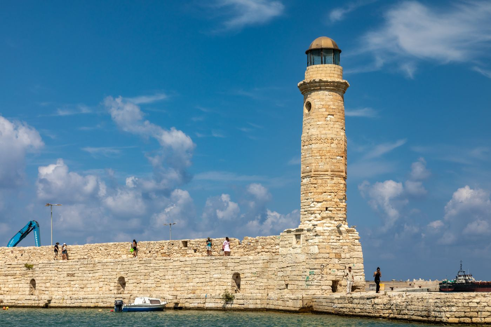

Mare, storia e tavole cretesi tra Rethymno e Chania
–
giorni
25 – 30 Agosto 2026·May Beach Hotel, Rethymno·Aeroporto Heraklion (HER)
📲
Aggiungi alla schermata Home per usare l'app anche senza connessione internet.
L'Itinerario
Sei giorni tra Rethymno, Chania e l'entroterra cretese
Elenco dei Luoghi
Spiagge, cultura e ristoranti selezionati per il viaggio
Descrizioni indicative — verifica orari e disponibilità più vicino alla partenza.
Crediti fotografici e mappe
Creta in Sei Giorni: Guida di Viaggio in Famiglia
Itinerario completo tra Rethymno, Chania e l'entroterra cretese — spiaggia per spiaggia, tappa per tappa
Questa guida raccoglie un itinerario pensato per una famiglia con un adolescente al seguito: sei giorni con un'unica base a Rethymno, una spiaggia diversa ogni giorno, uno dei siti archeologici più importanti di Grecia e cene nei centri storici veneziani. Ogni tappa è studiata per stare comodamente in giornata, senza rientri in hotel a metà pomeriggio e senza ore di guida sprecate. Qui sotto trovi tutto quello che serve per pianificarlo: quando andare, come muoversi, cosa aspettarsi da ogni luogo e i dettagli pratici che di solito si scoprono solo sul posto.
Quando andare: fine agosto è alta stagione — caldo intenso, giornate lunghissime, mare già caldissimo Base consigliata: Rethymno (in questa guida: May Beach Hotel, Missiria), a metà strada tra Chania e Heraklion Aeroporto di riferimento: Heraklion (HER), il principale scalo dell'isola Come muoversi: auto a noleggio indispensabile — i trasporti pubblici non coprono bene spiagge e villaggi dell'entroterra

Il porto veneziano di Rethymno, la base scelta per questo itinerario. — Foto: Dietmar Rabich, CC BY-SA 4.0, via Wikimedia Commons
Quando Andare
Fine agosto è pienamente in alta stagione: aspettati temperature che superano regolarmente i 30°C, cielo sereno per l'intera settimana e un mare già caldissimo dopo mesi d'estate. È anche il periodo di massima affluenza turistica, motivo per cui le spiagge più famose — su tutte Elafonissi — vanno affrontate presto al mattino. Le giornate sono lunghissime: il sole tramonta dopo le 20:00, il che lascia margine per un bagno anche nel tardo pomeriggio o per una cena all'aperto senza fretta.
Come Arrivare e Muoversi
L'Aeroporto Internazionale di Heraklion "Nikos Kazantzakis" (HER) è il principale scalo di Creta e il punto di partenza più comodo per un itinerario che tocca sia la zona di Rethymno sia quella di Chania. Dall'aeroporto conviene ritirare subito un'auto a noleggio: a Creta i trasporti pubblici collegano bene le città principali, ma non arrivano alle spiagge più belle né ai villaggi dell'entroterra, che restano il vero cuore di un itinerario come questo. Prevedi circa un'ora di strada dall'aeroporto a Rethymno.
Dove Alloggiare
Rethymno è la base ideale per un itinerario di sei giorni: è più o meno a metà strada tra Chania (a ovest) e Heraklion (a est), quindi permette di raggiungere entrambe le città e i rispettivi dintorni senza cambiare hotel ogni notte o due — un vantaggio enorme quando si viaggia con bambini o ragazzi, perché si disfano le valigie una volta sola. Cerca una sistemazione lungo la costa tra Rethymno e Georgioupoli, possibilmente con piscina: dopo giornate calde e spiagge con poca ombra naturale, un bagno in piscina la sera è quasi indispensabile.
Cosa Mettere in Valigia
La prima cosa da fare appena arrivati, prima ancora di disfare le valigie, è comprare uno o due ombrelloni da spiaggia economici in un supermercato o in un negozio di articoli da mare — e tenerli in auto per tutta la settimana. Molte delle spiagge più belle di Creta, Elafonissi in testa, non hanno un servizio di noleggio lettini organizzato: l'ombra va gestita da soli, in ordine di arrivo. Aggiungi crema solare ad alta protezione, un cappellino per ciascuno, scarpette da scoglio (utili sia in spiaggia sia nelle brevi soste in gola) e un po' di contante: molte taverne di paese e le piccole botteghe di ceramica a Margarites preferiscono ancora i pagamenti in contanti.
L'Itinerario in Breve
Giorno 1 — Arrivo all'aeroporto di Heraklion, trasferimento a Rethymno, primo bagno in piscina.
Giorno 2 — Giornata a Elafonissi, la spiaggia rosa; sera nel centro storico di Chania.
Giorno 3 — Mattina a Bali Beach, pomeriggio al Palazzo di Cnosso, sera a Heraklion.
Giorno 4 — Giornata di relax tra spiaggia/piscina e il borgo della ceramica di Margarites, sera con Greek Night.
Giorno 5 — Crociera in barca a tema pirata lungo la costa di Rethymno, piscina e passeggiata nella old town.
Giorno 6 — Spiagge vicino Chania, pomeriggio in città, ultima cena a Rethymno.
Giorno 1Arrivo e Assestamento
Il primo giorno non è pensato per riempire il programma, ma per assorbire il cambio di ritmo. Dopo l'atterraggio all'Aeroporto di Heraklion e il ritiro delle auto a noleggio, il tragitto verso Rethymno segue la costa nord per circa un'ora — un buon modo per iniziare a guardarsi intorno senza fretta. Arrivati, il check-in e il primo bagno in piscina bastano a segnare l'inizio della vacanza.
Vale la pena dedicare mezz'ora, il primo pomeriggio, a un supermercato o un negozio da spiaggia: comprare uno o due ombrelloni economici qui evita di doverli cercare (o rinunciarci) il giorno dopo a Elafonissi, dove — come vedremo — la gestione dell'ombra è un fai-da-te comunale. La sera, meglio tenere le cose semplici: una cena informale vicino all'hotel è sufficiente, il vero programma comincia domani.
Il litorale nei pressi di Heraklion, primo sguardo su Creta appena atterrati. — Foto: Tango7174, CC BY-SA 4.0, via Wikimedia Commons
Giorno 2La Spiaggia Rosa di Elafonissi e la Sera a Chania
Elafonissi è una riserva naturale nell'angolo sud-occidentale di Creta, famosa in tutto il Mediterraneo per la sabbia dalle sfumature rosate — dovute a minuscoli frammenti di conchiglie — e per la laguna bassa e trasparente che la separa da un isolotto raggiungibile a piedi. È una delle spiagge più fotografate della Grecia, il che significa anche una delle più affollate: dalla tarda mattinata in poi il parcheggio si riempie e la sabbia libera si restringe sensibilmente. Partire alle 7:30, con circa due ore di strada da mettere in conto, non è un capriccio ma la condizione per trovarla ancora semi-deserta.
Il percorso verso sud-ovest attraversa l'entroterra montuoso di Chania, e vale la pena spezzarlo con una sosta breve — quindici, venti minuti al massimo. Due opzioni comode: la piazzetta ombreggiata di Elos, un paese di montagna noto per i suoi castagni secolari, oppure il bar panoramico affacciato sulla Gola di Topolia, comodo perché tutto in terrazza, senza bisogno di percorsi a piedi.
La Gola di Topolia, una delle soste panoramiche lungo la strada per Elafonissi. — Foto: Jimzoun, CC BY-SA 4.0, via Wikimedia Commons
Una volta arrivati, l'ombrellone portato da casa permette di sistemarsi senza dipendere dai lettini a noleggio, che qui sono gestiti dal comune e assegnati semplicemente in ordine di arrivo. L'acqua della laguna resta bassissima per decine di metri — tra le più sicure dell'isola per i bambini piccoli — mentre il lato aperto verso il mare regala il colore turchese che rende Elafonissi così riconoscibile nelle foto.
La laguna di Elafonissi: acqua bassissima e sabbia dalle sfumature rosate. — Foto: G Da, CC BY-SA 3.0, via Wikimedia Commons
Nel tardo pomeriggio si riparte, ma non verso Rethymno: la strada del rientro passa comunque vicino a Chania, quindi proseguire fino in città costa solo una decina di minuti in più rispetto al percorso diretto. È un'occasione da non sprecare. Il centro storico di Chania, con il suo Porto Veneziano, è probabilmente il più suggestivo di Creta: moli di pietra, un faro in stile egiziano del XVI secolo alla fine del molo, ex moschee ottomane trasformate in gallerie, e vicoli stretti pieni di taverne. La sera è il momento migliore per visitarlo, quando le luci si accendono sull'acqua e il caldo del giorno si allenta. Cena in una taverna tradizionale con specialità di carne cotta al forno a legna, poi un'unica strada di rientro verso Rethymno, circa un'ora e un quarto.
Il faro all'ingresso del Porto Veneziano di Chania, il momento migliore per visitarlo è la sera. — Foto: Ввласенко, CC BY-SA 3.0, via Wikimedia Commons
Giorno 3Bali Beach, Cnosso nel Tardo Pomeriggio e Serata a Heraklion
Bali è un piccolo villaggio sulla costa nord, costruito attorno a una serie di calette strette e riparate — Livadi, Karavostasi, Evita — separate tra loro da promontori rocciosi ma tutte a pochi passi l'una dall'altra. L'acqua è calma quasi come quella di un lago, protetta dal vento e dalle onde del mare aperto, il che la rende una delle mete più amate dalle famiglie con bambini piccoli. È anche piccola: conviene arrivare in mattinata, verso le 9:00, per trovare posto senza dover girare a lungo tra le calette. Il pranzo si fa direttamente in una delle taverne sul mare, spesso costruite proprio sugli scogli.
Una delle calette di Bali: acqua calma, protetta dal vento e dal mare aperto. — Foto: Pjotr Mahhonin, CC BY-SA 4.0, via Wikimedia Commons
Dal primo pomeriggio ci si sposta verso Cnosso, circa 50 minuti di auto. Il Palazzo di Cnosso è il sito archeologico più importante della civiltà minoica, la più antica cultura avanzata d'Europa, fiorita a Creta oltre 3.500 anni fa. È il luogo che il mito colloca al centro della storia del Labirinto e del Minotauro: gli scavi, guidati agli inizi del Novecento dall'archeologo britannico Arthur Evans, hanno riportato alla luce un complesso di centinaia di stanze su più livelli, magazzini, cortili e affreschi — in parte ricostruiti, ed è una delle ragioni per cui il sito divide ancora oggi gli esperti tra chi apprezza la leggibilità delle ricostruzioni e chi le considera troppo invasive.
Le colonne rosse ricostruite sono uno dei tratti più riconoscibili di Cnosso. — Foto: CMOSPOWER, CC BY-SA 4.0, via Wikimedia Commons
Un ingresso nel tardo pomeriggio (qui alle 17:00, prenotato in anticipo) non è casuale: evita il caldo peggiore della giornata e regala una luce più morbida sulle pietre e sugli affreschi, mentre il sito resta comunque aperto fino a sera, quindi non serve affrettare la visita. Vale la pena prevedere un'ora, un'ora e mezza con bambini al seguito, e raccontare il mito del Minotauro prima di entrare: rende molto più coinvolgente il percorso tra le rovine, in particolare la sala del trono, una delle stanze meglio conservate del complesso.
La sala del trono, una delle stanze meglio conservate del complesso minoico. — Foto: Cayambe, CC BY-SA 4.0, via Wikimedia Commons
Da Cnosso, Heraklion è a pochi minuti d'auto: conviene parcheggiare al Central Parking, custodito e nel cuore del centro storico, per muoversi poi solo a piedi. La cena da Kafeneio O Tempelis, storico mezedopoleio nella via pedonale di Milatou vicino al Museo Archeologico, è un classico locale: piccoli piatti tradizionali, raki e spesso un dolce offerto a fine pasto — è molto amato anche dagli abitanti della città, quindi conviene arrivare presto la sera per trovare posto. Dopo cena, una passeggiata dalla cinquecentesca Fontana di Morosini in Piazza dei Leoni fino al Porto Veneziano chiude la giornata prima del rientro a Rethymno, circa un'ora di strada.
La Fontana di Morosini, cuore di Piazza dei Leoni nel centro storico di Heraklion. — Foto: Moonik, CC BY-SA 3.0, via Wikimedia Commons
Giorno 4Relax, Ceramiche e Serata Cretese
Dopo tre giorni densi, il quarto è costruito apposta per rallentare — e in un itinerario con bambini o ragazzi, questo tipo di giornata "cuscinetto" fa spesso la differenza tra un viaggio piacevole e uno stancante. La mattina lascia scegliere tra due opzioni comode: Episkopi Beach, ampia, sabbiosa e meno turistica delle spiagge principali, oppure semplicemente la piscina dell'hotel, se il gruppo preferisce non muoversi.
Nel tardo pomeriggio, quando il caldo si allenta, si raggiunge Margarites, un borgo collinare nell'entroterra di Rethymno con una tradizione ceramista che risale a diversi secoli fa. Le stradine del paese sono piene di botteghe artigiane dove è ancora possibile vedere il tornio in azione — molte famiglie tramandano il mestiere da generazioni — e acquistare pezzi realmente unici, lontano dai souvenir standardizzati delle zone più turistiche. È una tappa che funziona bene anche con i bambini: guardare un vaso prendere forma sul tornio è più coinvolgente di quanto sembri.
Le stradine di Margarites, borgo con una tradizione ceramista secolare. — Foto: C messier, CC BY-SA 4.0, via Wikimedia Commons
La sera è quella della Greek Night: cena alle 20:00 alla Taverna Thalassi, seguita alle 20:30 da uno spettacolo con musica dal vivo e danze tradizionali cretesi. Sono serate pensate per il pubblico, certo, ma restano un buon modo per avvicinare anche i più giovani alla cultura locale — spesso, verso la fine, il pubblico viene invitato a unirsi ai ballerini sulla pista.
Giorno 5Crociera dei Pirati e Old Town di Rethymno
Il quinto giorno si stacca dal resto dell'itinerario con una mattinata diversa dalle altre: una crociera di tre ore a bordo della Captain Hook, un veliero a tema pirata che parte dal Marina Port di Rethymno (conviene presentarsi al molo 45 minuti prima). Il percorso segue la costa orientale della città, tocca le leggendarie Grotte dei Pirati e l'arco roccioso di Camarola, e prevede una sosta di mezz'ora per un bagno in acque cristalline al largo. A bordo sono inclusi una bevanda — birra o vino per gli adulti, una bibita per i bambini — e uno snack; i bambini dai 5 ai 12 anni hanno lo sconto del 50%, mentre gli under 4 viaggiano gratis (va dichiarato in fase di prenotazione). Al rientro, la vista sulla Fortezza e sul Porto Veneziano dal mare è un ottimo modo per scoprire Rethymno da un'angolazione diversa da quella con cui la si visiterà poco dopo, a piedi.
Nel pomeriggio, dopo il rientro, c'è tempo per la piscina dell'hotel — ed è anche il momento più comodo per dedicare un'ora alla old town, magari proprio agli stessi luoghi appena visti dal mare. Il centro storico mescola architettura veneziana e ottomana in uno spazio compatto e percorribile a piedi: la Fortezza, costruita dai veneziani nel XVI secolo per difendere il porto dai raid dei pirati e poi ampliata dagli ottomani, domina la città da un promontorio roccioso e regala una vista che vale la salita. Ai suoi piedi, i vicoli del centro sono pieni di balconi in legno, portali scolpiti e un porto veneziano più piccolo e raccolto rispetto a quello di Chania, ma non meno pittoresco, soprattutto quando si accendono le luci della sera.
La Fortezza veneziana, costruita nel XVI secolo a difesa del porto di Rethymno. — Foto: Dietmar Rabich, CC BY-SA 4.0, via Wikimedia CommonsBalconi in legno e portali scolpiti nei vicoli della old town. — Foto: Nat Pikozh, CC BY 2.0, via Wikimedia Commons
La cena, quella sera, è fuori porta: Taverna Goules, a Goulediana, circa venti minuti dall'hotel, è famosa per le ricette tradizionali a base di agnello e maiale cotti lentamente alla brace, in un ambiente informale immerso nel verde — la chiusura perfetta per una giornata pensata per rallentare.
Giorno 6Un Giorno a Chania: Mare, Porto Veneziano e l'Ultima Cena a Rethymno
L'ultimo giorno pieno torna verso Chania, ma da un punto di partenza diverso rispetto al giorno 2. La mattina, circa 45-50 minuti di strada, porta a Marathi o Almyrida, due piccoli villaggi costieri a pochi minuti l'uno dall'altro. Marathi è una baia a ferro di cavallo con acqua bassissima e calma su gran parte della superficie — probabilmente la spiaggia più sicura di tutto l'itinerario per i bambini più piccoli — e offre anche il noleggio di SUP e kayak, un buon modo per coinvolgere un adolescente che a questo punto della settimana ha già visto diverse spiagge "tranquille".
Marathi: una baia a ferro di cavallo con acqua bassissima quasi ovunque. — Foto: Tanya Dedyukhina, CC BY 3.0, via Wikimedia Commons
Almyrida, poco più a est, ha un'atmosfera diversa: più villaggio turistico che baia isolata, con un lungomare vivace di taverne e caffè e una spiaggia comunque sabbiosa e calma — una buona alternativa se si preferisce un po' più di movimento rispetto a Marathi.
Il lungomare di Almyrida, tra taverne e caffè affacciati sulla spiaggia. — Foto: Jlundqvi, CC BY-SA 3.0, via Wikimedia Commons
Il punto di forza della giornata è la geografia: da Marathi o Almyrida, Chania è a soli 15-20 minuti, quindi non serve tornare in hotel a metà giornata come capita spesso nei classici itinerari "spiaggia più città". Si passa direttamente al pomeriggio nel centro storico, tra la passeggiata lungo il Porto Veneziano — la stessa vista del giorno 2, ma con la luce diversa del pomeriggio — e lo shopping nelle stradine, un'attività che generalmente piace di più agli adolescenti che ai bambini piccoli.
Solo nel tardo pomeriggio si torna al May Beach Hotel, per una doccia e un momento di decompressione prima dell'ultima sera. La cena finale è da Asikiko, un mezedopoleio nei vicoli della old town di Rethymno, a cinque minuti dall'hotel: porzioni abbondanti di piccoli piatti da condividere, in un'atmosfera raccolta che si presta bene a un ultimo brindisi prima del rientro.
Se Hai Più TempoAnogeia e l'Entroterra Montano
Questo itinerario di sei giorni non tocca l'entroterra montano di Creta, ma vale la pena saperne l'esistenza per un'eventuale estensione del viaggio. Anogeia, sulle pendici del Monte Psiloritis, è un villaggio di montagna a un'altitudine che regala un clima decisamente più fresco rispetto alla costa — un sollievo, se il caldo di fine agosto si fa sentire. È noto per la musica tradizionale suonata con la lyra cretese, per la tessitura, e per il suo ruolo simbolico nella resistenza cretese durante la Seconda Guerra Mondiale, quando il villaggio fu raso al suolo dalle truppe tedesche in rappresaglia.
È anche, insieme alla vicina Axos, il posto giusto per assaggiare l'Antikristo: agnello intero disposto in cerchio attorno a un fuoco aperto e cotto lentamente per ore, una delle esperienze gastronomiche più autentiche e scenografiche dell'isola. La strada di montagna per arrivarci richiede una guida più attenta rispetto ai tragitti costieri di questo itinerario, ma i paesaggi — gole, altopiani, greggi di capre libere sulla strada — ripagano l'impegno.
Anogeia, villaggio di montagna sulle pendici del Psiloritis. — Foto: Unukorno, CC BY 4.0, via Wikimedia Commons
Consigli Pratici
Spiagge e Sole
Porta il tuo ombrellone: molte delle spiagge migliori di Creta, Elafonissi in testa, non hanno un servizio organizzato di lettini a noleggio — l'ombra si gestisce da soli, comune per comune, in ordine di arrivo.
Le spiagge più famose (Elafonissi, ma anche Bali nel weekend) vanno affrontate presto al mattino: dalla tarda mattinata in poi affollamento e traffico crescono rapidamente.
Per i bambini più piccoli, cerca acque basse e protette: la laguna di Elafonissi, Marathi e Bali sono le opzioni più sicure di questo itinerario.
Porta sempre scarpette da scoglio: utili non solo in spiaggia, ma anche per le brevi soste in gole come quella di Topolia.
Guida e Logistica
Un'unica base fissa (qui Rethymno) e giornate organizzate come gite ad anello riducono drasticamente il tempo passato in auto rispetto a un itinerario che cambia hotel ogni notte o due.
I trasferimenti più lunghi di questo itinerario (verso Elafonissi, verso Cnosso) meritano una sosta intermedia: pianificala in anticipo, così da sapere dove fermarti senza perdere tempo a cercare sul momento.
Quando una città (Chania, Heraklion) è comunque sulla strada del rientro, vale quasi sempre la pena fermarsi: il costo in tempo aggiuntivo è spesso minimo rispetto al beneficio.
Nei centri storici, cerca parcheggi custoditi vicino al perimetro pedonale (come il Central Parking di Heraklion) invece di girare a lungo per strada.
Cibo e Ristoranti
Prenota in anticipo le cene nei giorni con un programma serale fisso (come la Greek Night): i posti migliori si riempiono rapidamente in alta stagione.
I mezedopoleia — locali specializzati in piccoli piatti da condividere — sono spesso l'opzione più interessante per famiglie: permettono di assaggiare più piatti diversi senza il rischio di un piatto "sbagliato" per i palati più difficili.
Porta sempre un po' di contante: molte taverne di paese, fuori dai centri più turistici, non accettano ancora pagamenti con carta.
In Viaggio con Adolescenti
Alterna giornate di sola spiaggia con tappe più attive: noleggio SUP/kayak a Marathi, shopping pomeridiano a Chania e le botteghe di ceramica di Margarites sono buoni modi per spezzare la routine "solo mare".
Cnosso funziona meglio se raccontato: il mito del Minotauro rende la visita più di una semplice camminata tra rovine, anche per un adolescente.
Sei giorni non bastano per vedere tutta Creta — ma seguendo un itinerario come questo, con una base fissa e giornate pensate per stare comodamente in sé stesse, bastano per viverne davvero una parte: una spiaggia rosa, un palazzo minoico vecchio di millenni, e più di una cena nei vicoli veneziani illuminati dalla sera.
Crete in Six Days: A Family Travel Guide
A complete itinerary between Rethymno, Chania and the Cretan interior — beach by beach, stop by stop
This guide lays out an itinerary built for a family traveling with a teenager: six days from a single base in Rethymno, a different beach each day, one of Greece's most important archaeological sites, and dinners in Venetian old towns. Every stop is designed to fit comfortably within a single day, with no late-afternoon detours back to the hotel and no hours lost to unnecessary driving. Below you'll find everything you need to plan it: when to go, how to get around, what to expect from each place, and the practical details that usually only get discovered on the ground.
When to go: late August is peak season — intense heat, very long days, and the sea at its warmest Recommended base: Rethymno (in this guide: May Beach Hotel, Missiria), roughly midway between Chania and Heraklion Reference airport: Heraklion (HER), the island's main hub Getting around: a rental car is essential — public transport doesn't reliably reach the beaches or inland villages this itinerary relies on
Rethymno's Venetian harbour, the base chosen for this itinerary. — Photo: Dietmar Rabich, CC BY-SA 4.0, via Wikimedia Commons
When to Go
Late August sits squarely in peak season: expect temperatures well above 30°C (86°F), clear skies for the entire week, and a sea that's already warm after months of summer. It's also the busiest stretch of the tourist calendar, which is why the most famous beaches — Elafonissi above all — need to be tackled early in the morning. Days are very long, with sunset after 8pm, which leaves room for a late-afternoon swim or an unhurried outdoor dinner.
Getting There and Around
Heraklion International Airport "Nikos Kazantzakis" (HER) is Crete's main gateway and the most convenient starting point for an itinerary that covers both the Rethymno and Chania areas. It's worth picking up a rental car right at the airport: Crete's public transport connects the major towns reasonably well, but it doesn't reach the best beaches or the inland villages that are really the heart of an itinerary like this one. Budget about an hour of driving from the airport to Rethymno.
Where to Stay
Rethymno is the ideal base for a six-day itinerary: it sits roughly midway between Chania to the west and Heraklion to the east, which means both cities and their surrounding areas are reachable without switching hotels every night or two — a real advantage when traveling with kids or teenagers, since you only unpack once. Look for accommodation along the coast between Rethymno and Georgioupoli, ideally with a pool: after hot days and beaches with little natural shade, an evening swim in a pool is close to essential.
What to Pack
The very first thing to do on arrival, before even unpacking, is to buy one or two cheap beach umbrellas at a supermarket or beach shop — and keep them in the car for the whole week. Many of Crete's best beaches, Elafonissi chief among them, don't have an organized sunbed rental service: shade is entirely self-managed, first come, first served. Add high-SPF sunscreen, a hat for everyone, water shoes (useful both at the beach and on short gorge stops), and some cash: many village tavernas and the small pottery shops in Margarites still prefer cash payments.
The Itinerary at a Glance
Day 1 — Arrival at Heraklion Airport, transfer to Rethymno, first swim in the pool.
Day 2 — A full day at Elafonissi, the pink sand beach; evening in Chania's old town.
Day 3 — Morning at Bali Beach, afternoon at the Palace of Knossos, evening in Heraklion.
Day 4 — A slower day between the beach/pool and the pottery village of Margarites, evening Greek Night.
Day 5 — A pirate-themed boat cruise along the Rethymno coast, pool time, and a walk through the old town.
Day 6 — Beaches near Chania, an afternoon in the city, last dinner in Rethymno.
Day 1Arrival and Settling In
The first day isn't built to be full — it's built to absorb the change of pace. After landing at Heraklion Airport and picking up the rental cars, the drive to Rethymno follows the north coast for about an hour, a good way to start taking in the scenery without any rush. Once there, check-in and a first swim in the pool are enough to mark the real start of the holiday.
It's worth spending half an hour that first afternoon at a supermarket or beach shop: buying one or two cheap umbrellas here saves you from having to search for one (or going without) the next day at Elafonissi, where, as we'll see, shade is entirely a do-it-yourself, municipally run affair. For dinner, keep it simple — a low-key meal near the hotel is enough; the real itinerary starts tomorrow.
The coastline near Heraklion — your first glimpse of Crete after landing. — Photo: Tango7174, CC BY-SA 4.0, via Wikimedia Commons
Day 2Elafonissi Pink Sand Beach and an Evening in Chania
Elafonissi is a nature reserve in Crete's southwestern corner, famous across the Mediterranean for its pink-tinged sand — the color comes from tiny fragments of shell — and for the shallow, transparent lagoon that separates it from a small islet you can walk to. It's one of the most photographed beaches in Greece, which also makes it one of the most crowded: from late morning onward, the parking fills up and the open sand visibly shrinks. Leaving at 7:30, with roughly two hours of driving ahead, isn't a whim — it's the condition for finding it still half-empty.
The drive southwest cuts through Chania's mountainous interior, and it's worth breaking it up with a short stop — fifteen to twenty minutes at most. Two easy options: the shaded little square of Elos, a mountain village known for its centuries-old chestnut trees, or the panoramic bar overlooking Topolia Gorge, convenient because it's all terrace seating, no hiking required.
Topolia Gorge, one of the scenic stops on the road to Elafonissi. — Photo: Jimzoun, CC BY-SA 4.0, via Wikimedia Commons
Once there, the umbrella brought from the day before means you're not dependent on rental sunbeds, which here are managed by the municipality and simply assigned in order of arrival. The lagoon's water stays shin-deep for dozens of meters — among the safest stretches of water on the island for small children — while the open side facing the sea delivers the turquoise color that makes Elafonissi so recognizable in photos.
Elafonissi's lagoon: shallow water and pink-tinged sand. — Photo: G Da, CC BY-SA 3.0, via Wikimedia Commons
In the late afternoon it's time to move on — but not toward Rethymno. The route back happens to pass close to Chania anyway, so continuing into the city costs only about ten extra minutes compared with the direct route. It's an opportunity worth taking. Chania's old town, built around its Venetian Harbour, is arguably the most striking in Crete: stone quays, a 16th-century Egyptian-style lighthouse at the end of the breakwater, former Ottoman mosques turned into galleries, and narrow lanes packed with tavernas. Evening is the best time to see it, once the lights come up over the water and the day's heat eases off. Dinner at a traditional taverna serving wood-fired oven meat specialties, then a single drive back to Rethymno, about an hour and fifteen minutes.
The lighthouse at the entrance to Chania's Venetian Harbour — best seen in the evening. — Photo: Ввласенко, CC BY-SA 3.0, via Wikimedia Commons
Day 3Bali Beach, Knossos in the Late Afternoon, and an Evening in Heraklion
Bali is a small village on the north coast, built around a string of narrow, sheltered coves — Livadi, Karavostasi, Evita — separated by rocky headlands but only steps apart from one another. The water is nearly lake-calm, protected from wind and open-sea swell, which makes it one of the beaches families with young children love most. It's also small, so it's worth arriving in the morning, around 9am, to find a spot without spending too long moving between coves. Lunch happens right there, at one of the seaside tavernas, often built directly over the rocks.
One of Bali's coves: calm water, sheltered from wind and open sea. — Photo: Pjotr Mahhonin, CC BY-SA 4.0, via Wikimedia Commons
From early afternoon, it's about a 50-minute drive to Knossos. The Palace of Knossos is the most important archaeological site of Minoan civilization, Europe's oldest advanced culture, which flourished on Crete more than 3,500 years ago. It's the site myth places at the center of the story of the Labyrinth and the Minotaur: excavations, led in the early 20th century by British archaeologist Arthur Evans, uncovered a sprawling, multi-level complex of hundreds of rooms, storerooms, courtyards, and frescoes — partly reconstructed, which is one reason the site still divides experts between those who appreciate how the reconstructions aid understanding and those who find them too invasive.
The reconstructed red columns are one of Knossos's most recognizable features. — Photo: CMOSPOWER, CC BY-SA 4.0, via Wikimedia Commons
A late-afternoon entry (here, 17:00, booked ahead of time) isn't arbitrary: it avoids the worst of the day's heat and gives softer light on the stone and the frescoes, while the site itself stays open into the evening, so there's no need to rush the visit. Plan for an hour to ninety minutes with kids in tow, and tell the story of the Minotaur before going in — it makes the walk through the ruins far more engaging, especially through the throne room, one of the best-preserved spaces in the whole complex.
The throne room, one of the best-preserved spaces in the Minoan complex. — Photo: Cayambe, CC BY-SA 4.0, via Wikimedia Commons
From Knossos, Heraklion is only a few minutes' drive away. It's worth parking at Central Parking, a guarded lot right in the historic center, and continuing on foot from there. Dinner at Kafeneio O Tempelis, a historic mezedopoleio on the pedestrian street of Milatou near the Archaeological Museum, is a local classic: small traditional dishes, raki, and often a dessert on the house at the end of the meal — it's much loved by locals too, so it's worth arriving early in the evening to get a table. After dinner, a walk from the 16th-century Morosini Fountain in Lions Square down to the Venetian Harbour rounds off the day, before the drive back to Rethymno, about an hour.
The Morosini Fountain, the heart of Heraklion's Lions Square. — Photo: Moonik, CC BY-SA 3.0, via Wikimedia Commons
Day 4Relaxing, Pottery, and a Cretan Evening
After three packed days, the fourth is built on purpose to slow down — and in an itinerary with kids or teenagers, a day like this often makes the difference between a trip that feels enjoyable and one that feels exhausting. The morning leaves the choice open between two easy options: Episkopi Beach, wide, sandy, and less touristy than the main beaches, or simply the hotel pool, if the group would rather not move at all.
In the late afternoon, once the heat eases, it's time for Margarites, a hillside village in Rethymno's interior with a pottery tradition going back several centuries. The village's narrow streets are lined with artisan workshops where you can still watch the wheel in action — many families have passed the craft down for generations — and buy genuinely one-of-a-kind pieces, far from the standardized souvenirs of more touristy areas. It's a stop that works surprisingly well with kids: watching a pot take shape on the wheel is more engaging than it sounds.
The lanes of Margarites, a village with a centuries-old pottery tradition. — Photo: C messier, CC BY-SA 4.0, via Wikimedia Commons
The evening belongs to Greek Night: dinner at 20:00 at Taverna Thalassi, followed at 20:30 by a show with live music and traditional Cretan dancing. These evenings are built for an audience, sure, but they're still a good way to introduce younger travelers to local culture — often, toward the end, the audience gets pulled onto the dance floor too.
Day 5Pirate Boat Cruise and Rethymno's Old Town
Day five breaks from the rest of the itinerary with a different kind of morning: a three-hour cruise aboard the Captain Hook, a pirate-themed sailing boat departing from Rethymno's Marina Port (plan to be at the dock 45 minutes early). The route follows the town's eastern coastline, stops at the legendary Pirate Caves and the Camarola rock arch, and includes a 30-minute swim stop in open, crystal-clear water. A drink is included on board — beer or wine for adults, a soft drink for kids — along with a snack; children aged 5–12 get a 50% discount, and under-4s travel free (this needs to be declared at booking). On the way back, seeing the Fortezza and the Venetian Harbour from the water is a good way to take in Rethymno from a different angle than the one you'll get on foot shortly after.
In the afternoon, once you're back, there's time for the hotel pool — and it's also the easiest moment to set aside an hour for the old town, perhaps revisiting the very same landmarks just seen from the sea. The historic center blends Venetian and Ottoman architecture in a compact, entirely walkable area: the Fortezza, built by the Venetians in the 16th century to defend the harbor from pirate raids and later expanded by the Ottomans, looms over the town from a rocky headland and rewards the climb with a proper view. At its foot, the old town's lanes are full of wooden balconies and carved stone doorways, and a Venetian harbour that's smaller and cozier than Chania's but no less picturesque, especially once the evening lights come on.
The Venetian Fortezza, built in the 16th century to defend Rethymno's harbor. — Photo: Dietmar Rabich, CC BY-SA 4.0, via Wikimedia CommonsWooden balconies and carved doorways in the old town's lanes. — Photo: Nat Pikozh, CC BY 2.0, via Wikimedia Commons
Dinner that evening is out of town: Taverna Goules, in Goulediana, about twenty minutes from the hotel, is known for traditional recipes built around slow-cooked lamb and pork over an open flame, in an informal setting surrounded by greenery — a fitting close to a day built for slowing down.
Day 6A Day in Chania: The Sea, the Venetian Harbour, and a Last Dinner in Rethymno
The last full day returns to Chania, but from a different starting point than Day 2. The morning, about 45–50 minutes of driving, leads to Marathi or Almyrida, two small coastal villages just minutes apart. Marathi is a horseshoe-shaped bay with shallow, calm water across most of its surface — probably the safest beach in the whole itinerary for young children — and it also offers SUP and kayak rental, a good way to keep a teenager engaged after a week that's already included several "quiet" beaches.
Marathi: a horseshoe-shaped bay with shallow water almost everywhere. — Photo: Tanya Dedyukhina, CC BY 3.0, via Wikimedia Commons
Almyrida, just a little further east, has a different feel: more of a lively seaside village than an isolated bay, with a bustling promenade of tavernas and cafés and a beach that's still sandy and calm — a good alternative if you'd rather have a bit more going on than Marathi offers.
Almyrida's promenade, lined with tavernas and cafés along the beach. — Photo: Jlundqvi, CC BY-SA 3.0, via Wikimedia Commons
The day's real strength is geography: from Marathi or Almyrida, Chania is only 15–20 minutes away, so there's no need to swing back to the hotel at midday, as often happens with classic "beach plus city" itineraries. The afternoon goes straight into the old town — a walk along the Venetian Harbour, the same view as Day 2 but in different, afternoon light, and some shopping in the lanes, an activity that generally lands better with teenagers than with younger kids.
Only in the late afternoon is it time to head back to the May Beach Hotel for a shower and a moment to decompress before the final evening. The last dinner is at Asikiko, a mezedopoleio in the lanes of Rethymno's old town, five minutes from the hotel: generous shared plates in an intimate setting that lends itself well to one last toast before heading back.
If You Have More TimeAnogeia and the Mountain Interior
This six-day itinerary doesn't venture into Crete's mountainous interior, but it's worth knowing it's there for anyone extending the trip. Anogeia, on the slopes of Mount Psiloritis, sits at an altitude that brings a noticeably cooler climate than the coast — a relief if the late-August heat starts to wear thin. It's known for traditional music played on the Cretan lyra, for weaving, and for its symbolic role in Cretan resistance during World War II, when the village was burned to the ground by German troops in reprisal.
It's also, along with nearby Axos, the right place to try Antikristo: a whole lamb arranged in a circle around an open fire and slow-cooked for hours, one of the island's most authentic and dramatic culinary experiences. The mountain roads to get there call for more careful driving than the coastal routes in the rest of this itinerary, but the scenery — gorges, plateaus, goats wandering freely across the road — makes up for the effort.
Anogeia, a mountain village on the slopes of Mount Psiloritis. — Photo: Unukorno, CC BY 4.0, via Wikimedia Commons
Practical Tips
Beaches and Sun
Bring your own umbrella: many of Crete's best beaches, Elafonissi above all, have no organized sunbed rental — shade is self-managed, municipality by municipality, first come, first served.
Tackle the most famous beaches (Elafonissi, and Bali on weekends) early in the morning: crowds and traffic build up fast from late morning onward.
For younger kids, look for shallow, sheltered water: Elafonissi's lagoon, Marathi, and Bali are the safest picks in this itinerary.
Pack water shoes: useful not just at the beach but for short gorge stops like the one at Topolia.
Driving and Logistics
One fixed base (Rethymno, here) with days planned as loop trips cuts driving time dramatically compared with an itinerary that changes hotels every night or two.
Several of the longer drives in this itinerary (to Elafonissi, to Knossos) deserve a planned stop along the way — decide on it in advance so you're not scrambling to find somewhere on the fly.
When a city (Chania, Heraklion) sits on the way back anyway, it's almost always worth stopping: the extra time cost is usually small compared with the payoff.
In historic centers, look for guarded parking near the pedestrian core (like Heraklion's Central Parking) instead of circling for street parking.
Food and Dining
Book ahead for evenings with a fixed program (like Greek Night): the best spots fill up quickly in peak season.
Mezedopoleia — restaurants built around small shared plates — are often the best choice for families: they let everyone try several different dishes without the risk of one "wrong" order for pickier eaters.
Carry some cash: many village tavernas, away from the busiest tourist centers, still don't take cards.
Traveling with Teenagers
Alternate beach-only days with more active stops: SUP/kayak rental at Marathi, an afternoon of shopping in Chania, and the pottery workshops of Margarites are good ways to break up a "just the beach" routine.
Knossos works best with a story attached: telling the myth of the Minotaur turns the visit into more than a walk through ruins, even for a teenager.
Six days aren't enough to see all of Crete — but following an itinerary like this one, with a fixed base and days built to fit comfortably within themselves, is enough to genuinely experience a real slice of it: a pink beach, a millennia-old Minoan palace, and more than one dinner in a Venetian lane lit up for the evening.